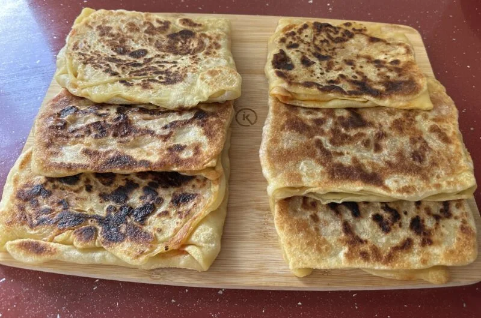
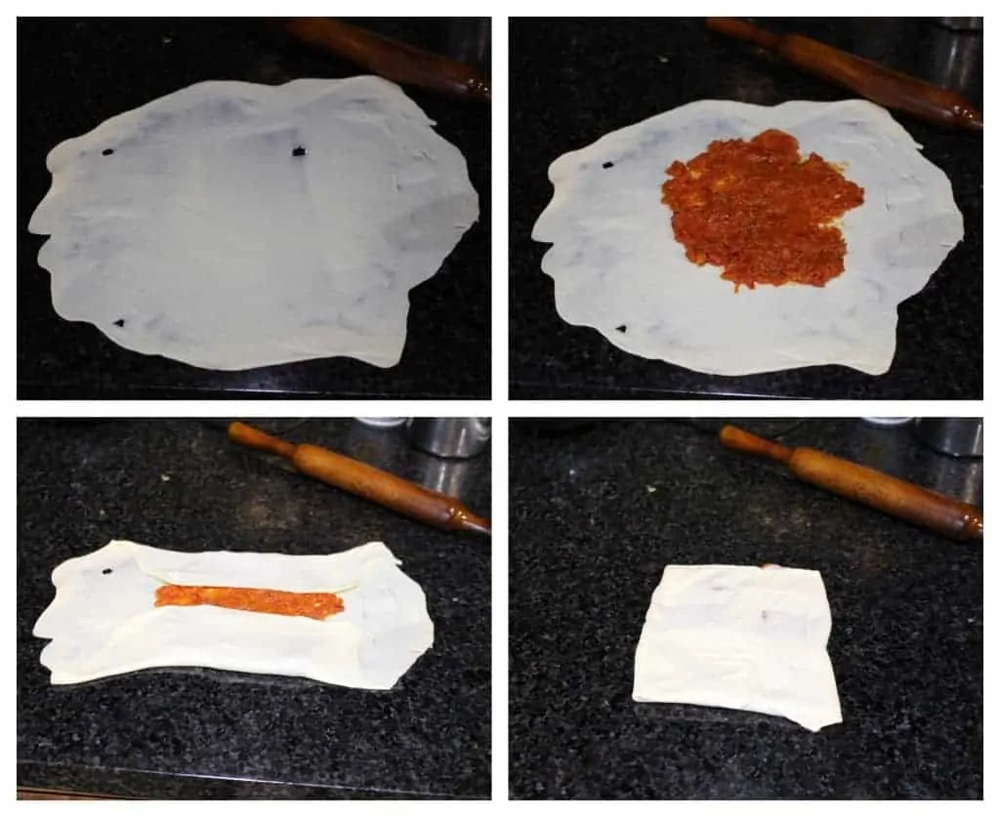

The Holy Mhadjeb

Why make this Mhadjeb recipe
If you search in Google: "Recipe for Mhadjeb", you get many different
recipes. Some are made only with semolina, others with half semolina and
half flour and even Mhadjeb made only with flour... Apart from the fact
that getting a perfect dough was a mystery, each filling is different.
If you are reading this you are lucky because I just made your life a
little easier! This Mhadjeb recipe is the result of trying to make these
flatbreads with only semolina, making them with half semolina and half
flour... until I finally dared to play a little with the measurements and
I got the perfect Mhadjeb.
The “basic” filling of Mhadjeb is made of tomato and onion. The good thing
is that you can make the filling however you like, many people prepare it
with red pepper, minced meat and even cheese.
Ingredients
To make the Dough
- Semolina flour / Fine semolina - 1 ½ cup
- Salt - 1 tsp
- Oil - 1 tablespoon plus more for greasing
- Water - as needed to make the dough
To make the Mahjouba filling
- Onion - 1 medium (finely chopped)
- Tomato - 1 - 14 OZ can (diced)
- Carrot - ½ cup (finely grated)
- Green chilies - 2 or 3 (finely minced)
- Ketchup - 2 TBSP
- Roasted cumin powder - 1 tsp
- Salt - to taste
- Pepper - to taste
- Oil - 1 TBSP
Steps
To make the dough
-
Combine the semolina flour and salt in a bowl and mix them together.
-
Slowly add water to make a soft dough. Knead the dough for 6 to 8
minutes until it is elastic.
-
Add 1 tablespoon of oil and continue to knead. Let the dough rest for at
least 30 minutes
To make the filling
-
Heat 1 tablespoon of oil in a pan. When the oil is hot, add the finely
chopped onions and saute it until translucent.
- Now add the grated carrot and saute for a couple of minutes.
-
Add the green chilies along with the diced tomatoes and let them come to
a boil.
-
Add the green chilies along with the diced tomatoes and let them come to
a boil.
-
Simmer and let the mixture thicken. It will take 15 to 20 minutes to get
the right consistency.
-
Let the filling cool down before we start assembling the Mahjouba.
To shape and cook the Mahjouba

-
Divide the dough into 6 equal balls. Coat each piece with oil and place
it on a greased surface.
-
Spread the ball with the heel of your hand to form a very thin circle.
-
Stretch the edges and make it as thin as possible. The dough has to be
well kneaded and rested so it does not tear much.
-
Spread about 2 heaped tablespoon of the filling in the center and fold
the two opposite ends to meet at the center.
-
Now fold the other two ends to come to the center and form an envelope.
- Heat a flat griddle and spray it with some oil.
-
Place the shaped Mahjouba on the hot pan and cook it on both sides until
golden brown.
- Repeat the same with the rest of the dough.
- Let it cool slightly and then serve.